This diagram opens with the exact sequence of wrong guesses that led to the right fix for a genuine Keras API-compatibility break, then follows the callback-driven training loop and the TFLite export verification.

| Node | Location | What it does |
|---|---|---|
| APIATTEMPT | train.py:load_data() | Two wrong API guesses, both with misleading error messages: path=<full path> raised a ValueError suggesting cache_dir; cache_dir=... then raised TypeError since that kwarg doesn't exist either. The actual fix came from inspect.signature(mnist.load_data) revealing the real, undocumented signature. |
| IMPROVED | train.py:train() (Keras callbacks) | EarlyStopping(patience=2, restore_best_weights=True) and ModelCheckpoint(save_best_only=True) run automatically after every epoch — Keras' idiomatic callback system, distinct from PyTorch's manual training loop in other projects. |
| AGREECHECK | export_tflite.py:compare_keras_vs_tflite() | For 20 real held-out samples, runs inference through BOTH the original Keras model AND the exported TFLite interpreter, comparing predicted classes directly — proving the export preserved model behavior, not just that the conversion didn't error. |
Two increasingly specific wrong guesses, each with an error message that pointed toward (but didn't quite match) the actual fix — resolved by inspecting the real function signature directly rather than trusting the error text.
APIATTEMPT(path=full_path) → ATTEMPT1FAIL → APIATTEMPT(cache_dir=...) → ATTEMPT2FAIL → APIATTEMPT(inspect.signature) → WORKSIf validation accuracy stops improving for 2 consecutive epochs, training halts early and the BEST weights (not the last epoch's) are restored automatically.
EPOCHLOOP → VALCHECK(no improvement) → IMPROVED(No)×2 → STOPEARLY(restore best) → TRAINDONEAll 20 held-out samples produce identical predictions from the original Keras model and the exported TFLite model — real, measured evidence the 67.9%-smaller export still behaves the same.
COMPARELOOP×20 → KERASPRED vs TFLITEPRED → AGREECHECK(match, all 20) → FINALRESULT(100% agreement)